Start with one good pot near the steps
A sturdy, pretty planter gives the whole entry a focal point right away. It helps the flowers feel intentional instead of scattered.
Story guide
Start with the mood, then the pretty pieces, then the helpful extras if you want the look to stay easy.
Amazon list
This story will get one future list for the pot, basket, greenery, and the small extras that keep the whole look easy.
Cute Touch People Keep Choosing
A soft porch pot, a little greenery, and flowers by the steps can make the whole entry feel fuller, prettier, and much more charming.
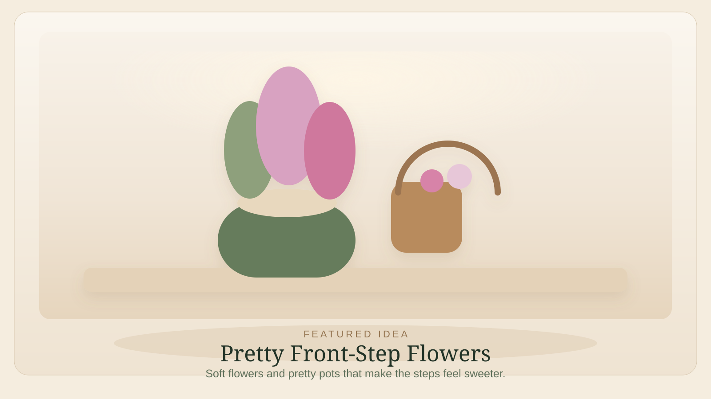
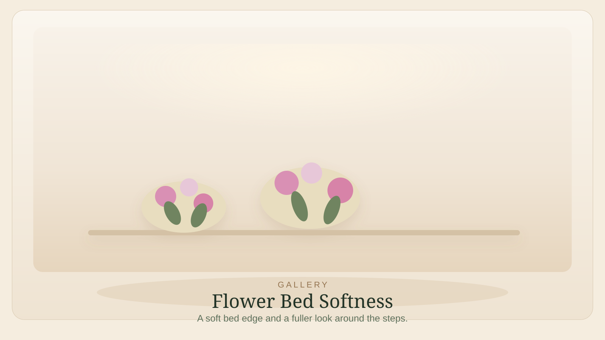
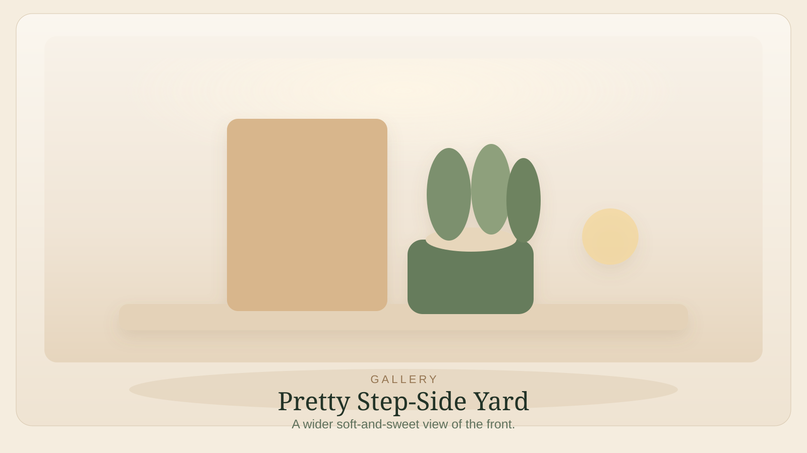
Flowers by the steps do something special. They make the whole walk up feel softer, the porch feel sweeter, and even a simple entry feel a little more loved.
This kind of floral styling works because it changes the feel of the steps before anyone notices the exact flowers. The entry looks fuller, more welcoming, and just a little more charming.
You do not need a real garden project for this. A good planter, one floral basket, and a little greenery can carry the whole feeling without becoming a huge chore or a whole Saturday.
How to try it
A sturdy, pretty planter gives the whole entry a focal point right away. It helps the flowers feel intentional instead of scattered.
Rounded flowers and easy greenery work especially well here. You want the steps to feel sweeter, not crowded.
The best front-step flowers sit close enough to the entry to soften it, but not so close that they swallow the path.
Once the pretty part feels right, the mulch, tools, and watering help keep it all looking nice without becoming the star of the page.
Keep it looking sweet
Swap with the season
Shop now
These are the first pieces to click when you want the look, the mood, and the easiest visible payoff.
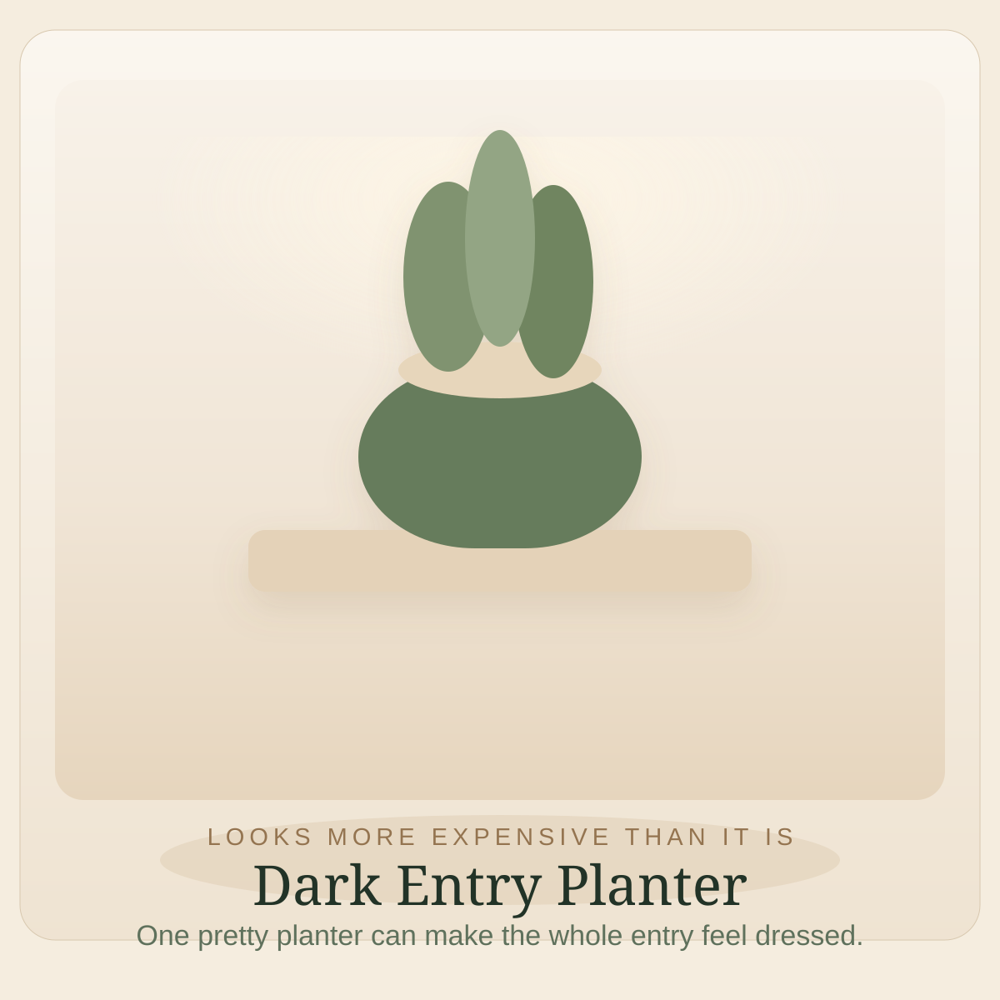
It gives the door one pretty focal point and works in every season.
One good planter usually feels better than a cluster of smaller ones.
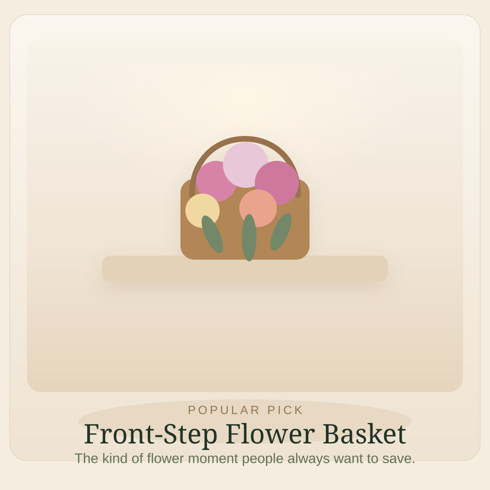
It gives the front steps that soft, generous look people always seem to save.
This kind of piece works best when it looks easy and full, not overly arranged.
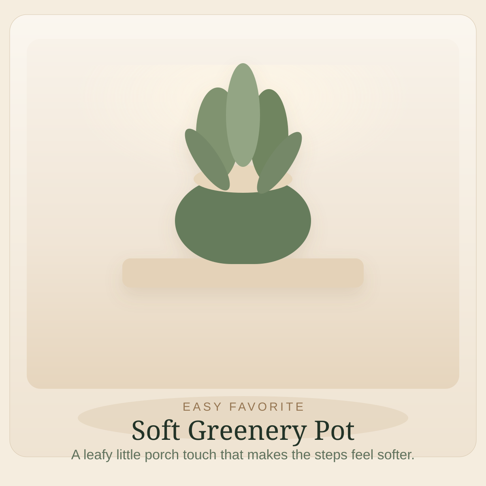
It makes the entry feel softer even when everything else is simple.
This is the kind of little upgrade that makes the entry feel finished even before flowers peak.
These product links point to broad Amazon search pages chosen to stay stable, easy to update, and secondary to the mood of the idea itself.
Helpful extras
The useful support pieces live down here so the pretty part stays the star.
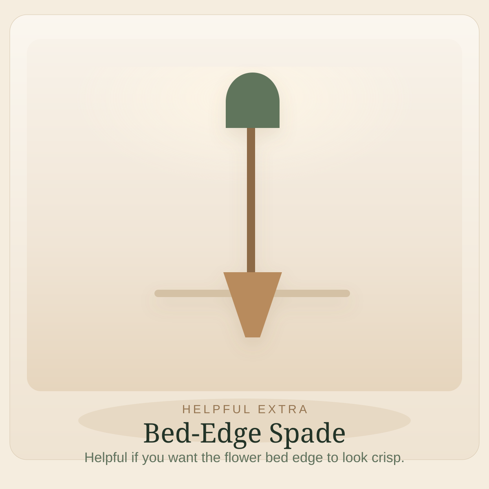
Helpful extra
A narrow spade helps keep the flower bed edge crisp, which is often what makes the whole thing look neat instead of messy.
If the bed line stays sharp, the flowers read as more intentional even before everything fills in.
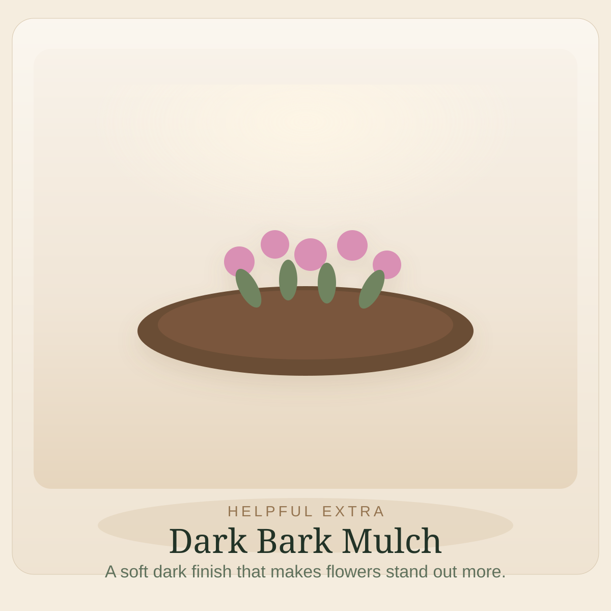
Helpful extra
A dark mulch layer settles the whole bed visually and gives the flowers and greenery a cleaner backdrop.
It is not glamorous, but it really does make the flowers look prettier almost immediately.
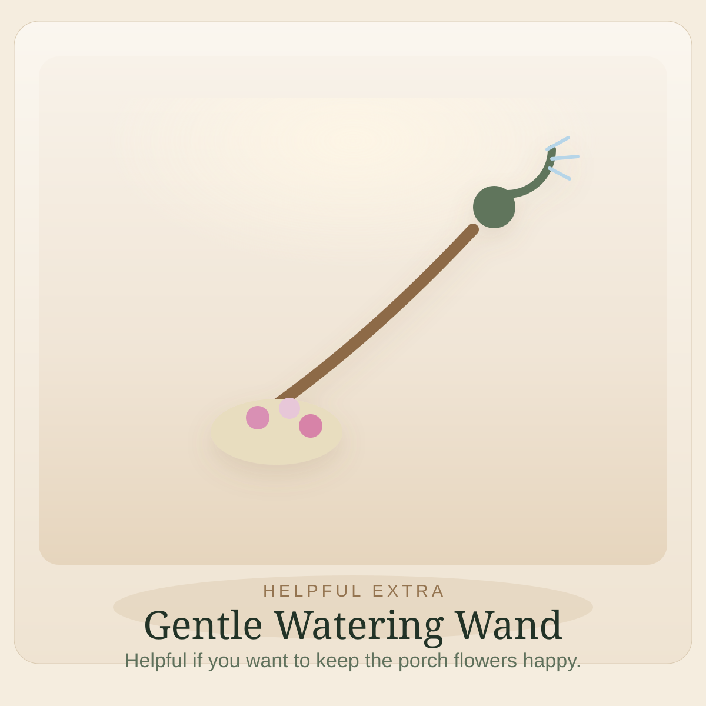
Helpful extra
A watering wand makes it easier to keep front-step flowers happy without dragging a hose awkwardly through the entry.
The best helpful extras are the ones you actually grab often enough to matter.
More in Seasonal Sweetness
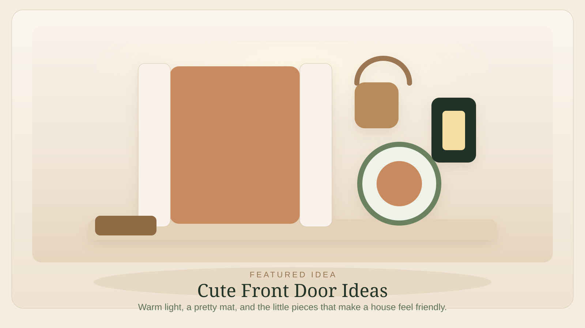
Popular Around the Neighborhood
Easy FavoriteA better mat, a warm glow, a pretty planter, and one or two sweet little details can make the whole front of a house feel friendlier almost immediately.
If the front door looks warm, softly lit, and just a little dressed up, the whole house usually feels nicer before anyone even gets inside.
Read idea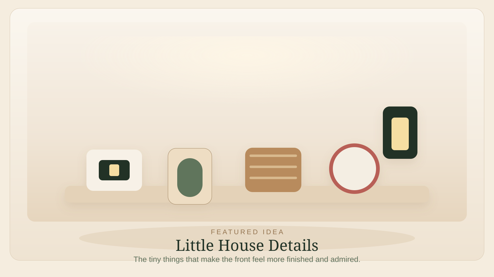
Looks More Expensive Than It Is
Small Detail, Big DifferenceHouse numbers, a tidier mailbox, a lantern, and one or two sweet little extras can make the front of a house feel much more finished than you would think.
The nicest little house details are the ones that make people think the whole place feels more put together, even if they cannot name exactly why.
Read idea